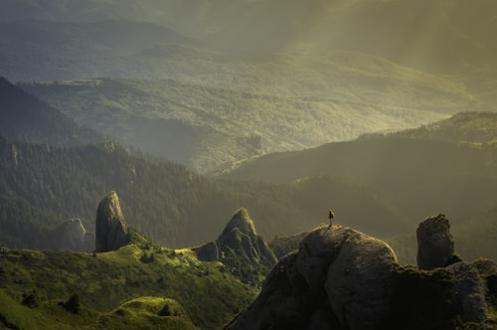

Aventura Familiar
Perfeito para iniciantes, crianças e quem busca contemplar a natureza. Uma descida tranquila pelo Rio Paranapanema com corredeiras leves e muitas paradas para banho.
- Duração: 2 horas
- Dificuldade: Nível I (Fácil)
- Idade mínima: 6 anos